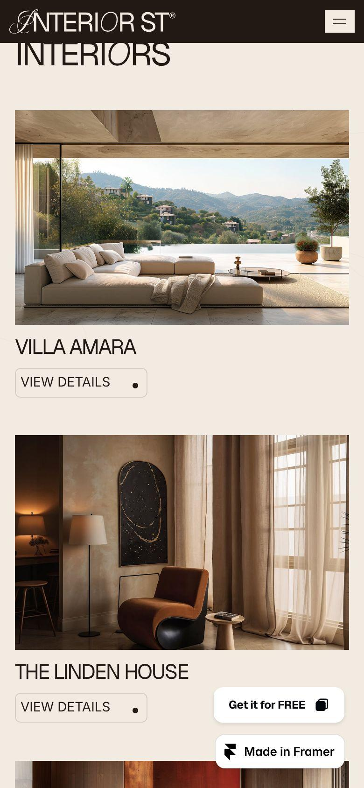

Open any image to see it full size. Guide: DESIGN_REFERENCES.md
Header: announcement bar (showroom news plus 'Licensed, bonded & insured, Mon-Fri 7am-5pm'), then a rounded outlined nav capsule with phone icon and number plus an amber 'Free estimate' button; Hero proof stack: Google 4.9 star chip above the H1, two CTAs (amber 'Get a free estimate', outlined 'See our projects'), then a three-item proof row (640+ projects since 2011, 5-year warranty, phone with hours) and a scrolling marquee of credentials; Service cards with photo, timeline chip and starting price chip ('6-10 weeks', 'From $28k', 'From $18k', 'Custom quote'); Drag-handle before/after slider beside a short case-study story ('This 1950s ranch house ... in eleven weeks') and 'Read the full case study'
Signature typographic device: uppercase grotesk headlines with single swash script initials, instantly premium and memorable; Testimonial block: big headline 'Real stories from homeowners who trusted us', video still of client left, terracotta quote card overlapping it, '4.9/5 average rating' with stars in parentheses brackets; Pricing transparency: 'The right budget builds the right attention' with three tiers (Consultation from $2,900, Full Design from $18,000, Turnkey from $65,000) and bullet inclusions; Dark FAQ accordion with thin dividers and plus/minus icons, questions about timeline, budget, working with your contractor